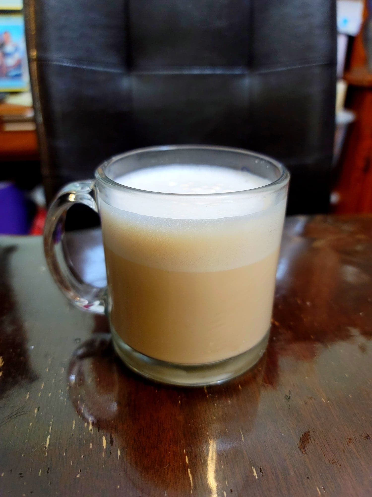

Teh Tarik

Ingredients:
- 1/2 tbsp Loose black tea
- 1 cup Water
- 2 tsp Condensed milk, or to taste
Instructions:
- Bring the water to a boil and then remove from heat. Add in the tea leaves and let steep for about 10 minutes.
- Strain out the leaves and pour the tea into a jug. Stir in the condensed milk. Pour into a mug or tea glass, trying to gain as much height as possible from the glass while pouring. Repeat as needed to create the frothy effect. Alternatively, use a milk frother to simulate the same effect.